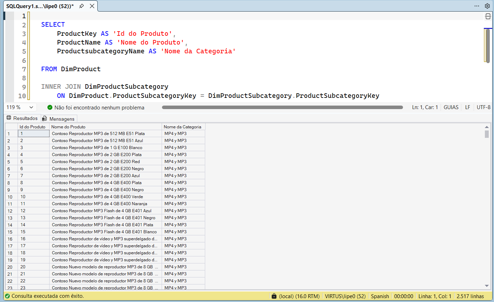
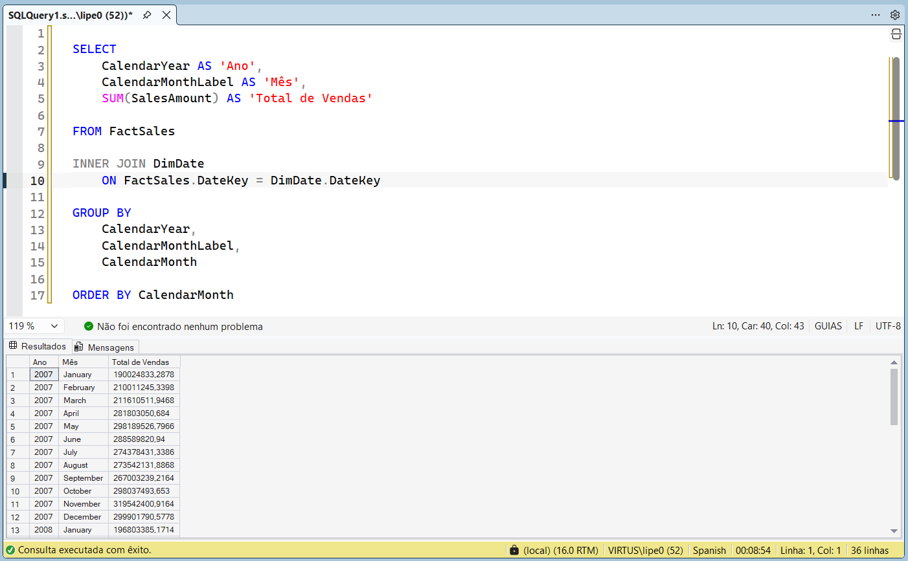
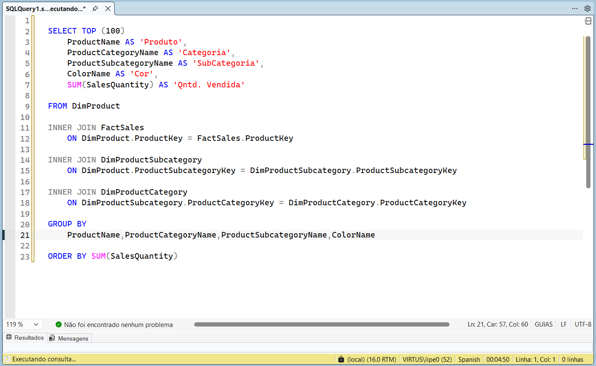
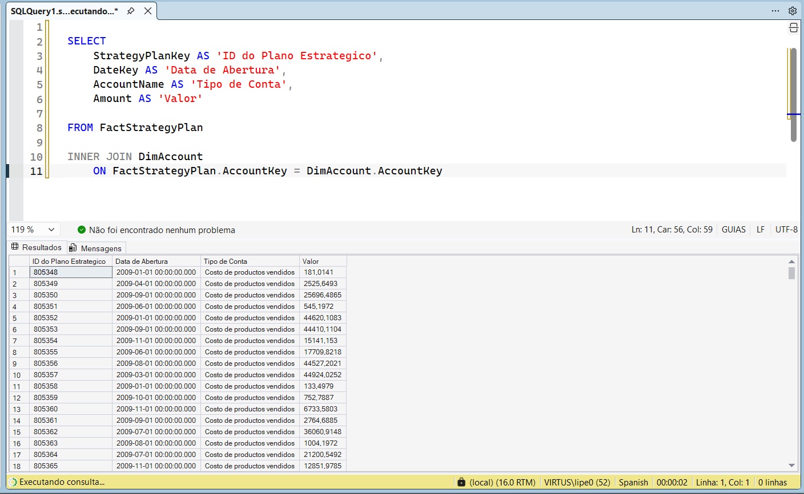
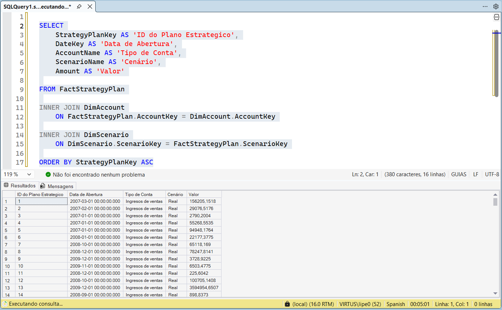
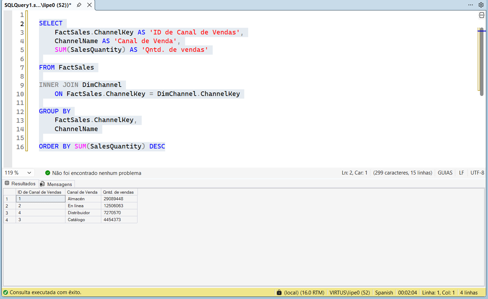
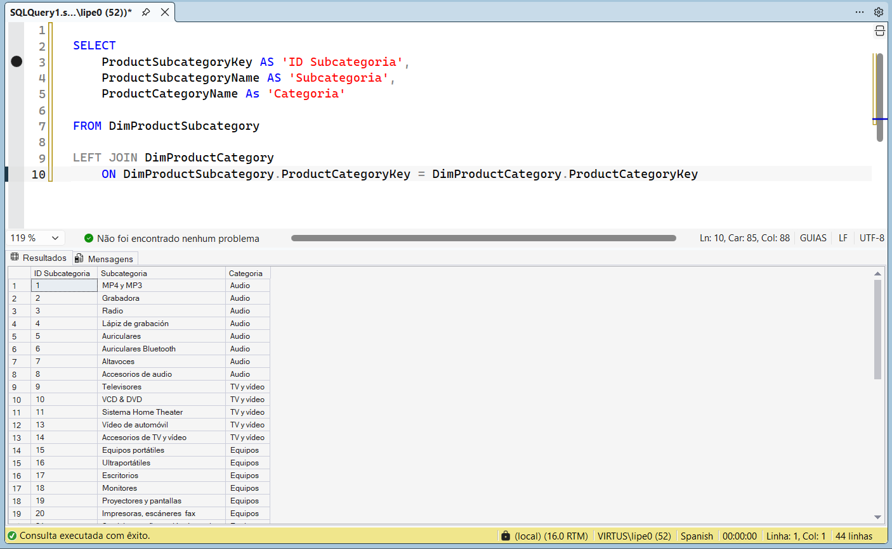
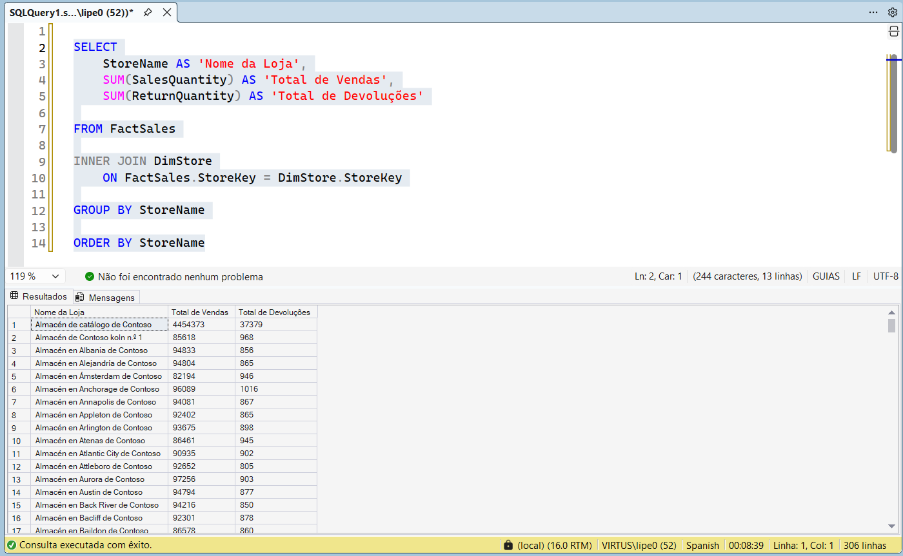
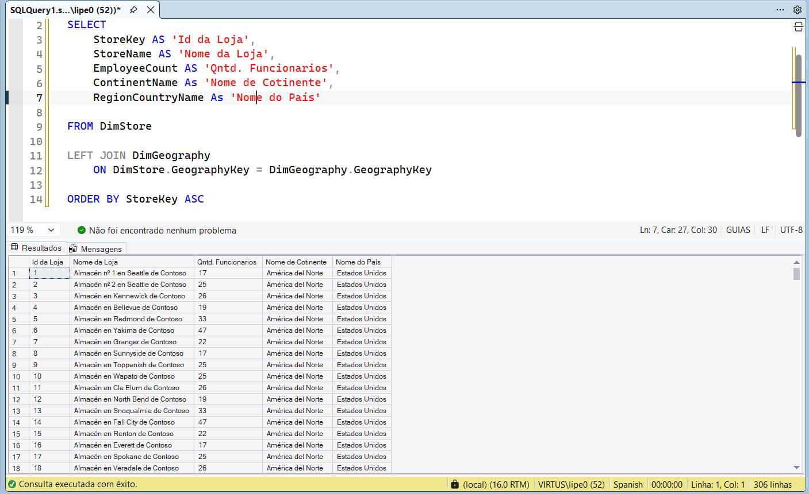

Contexto
A base Contoso possui centenas de tabelas relacionadas entre si, contendo informações de produtos, vendas, clientes, lojas, canais comerciais e planejamento estratégico.
O projeto teve como objetivo compreender essa estrutura relacional e desenvolver consultas SQL capazes de transformar dados distribuídos em informações úteis para análise de negócios.
Objetivo
Aplicar conceitos de SQL Server para consultar uma base de dados relacional utilizando JOINs, filtros e agregações, respondendo perguntas relacionadas a vendas, produtos, categorias, canais comerciais, lojas e planejamento estratégico.
Processo
Exploração da base
- Identificação das tabelas
- Entendimento das chaves
- Relação entre fatos e dimensões
Construção dos relacionamentos
- INNER JOIN
- LEFT JOIN
Agregações
- GROUP BY
- SUM
- ORDER BY
Consultas analíticas
- Produtos
- Categorias
- Subcategorias
- Lojas
- Canais
- Planejamento Estratégico
Entregáveis
Insights
O projeto permitiu responder questões como:
- Quais produtos apresentam maior volume de vendas?
- Quais categorias e subcategorias possuem melhor desempenho?
- Como as vendas estão distribuídas entre os canais comerciais?
- Qual é a evolução das vendas por mês e ano?
- Como consolidar informações provenientes de diferentes tabelas relacionais?
Evidências
Consulta 01 — Produtos e Subcategorias
Relacionamento entre produtos e suas respectivas subcategorias, permitindo compreender a estrutura do catálogo e a organização dos dados.

Consulta 02 — Vendas por Período
Consolidação do valor total de vendas por mês e ano, permitindo analisar o comportamento das vendas ao longo do tempo.

Consulta 03 — Produtos Mais Vendidos
Análise da quantidade vendida por produto, categoria, subcategoria e cor, identificando os itens com maior volume de vendas

Consulta 04 — Plano Estratégico por Conta
Consulta utilizada para relacionar informações do planejamento estratégico aos tipos de contas e respectivos valores registrados.

Consulta 05 — Plano Estratégico por Cenário
Integração entre planejamento estratégico, contas e cenários para visualizar os valores registrados em cada contexto de negócio.

Consulta 06 — Vendas por Canal
Agrupamento das vendas por canal comercial, permitindo comparar o desempenho entre loja física, catálogo, distribuidores e vendas online.

Consulta 07 — Categorias e Subcategorias
Estrutura hierárquica das categorias e subcategorias dos produtos, utilizada para apoiar consultas e análises comerciais.

Consulta 08 — Vendas e Devoluções por Loja
Comparação entre o volume de vendas e devoluções de cada loja, auxiliando na avaliação do desempenho operacional.

Consulta 09 — Informações das Lojas
Consulta que reúne informações das lojas, quantidade de funcionários e localização geográfica para análises de distribuição e operação.

Aprendizado
Este projeto consolidou minha compreensão sobre bancos de dados relacionais, permitindo desenvolver consultas SQL para transformar dados brutos em informações úteis para análise. Durante sua construção, aprofundei conhecimentos em relacionamentos entre tabelas, agregações, filtros, JOINs e organização de consultas voltadas para responder perguntas de negócio.